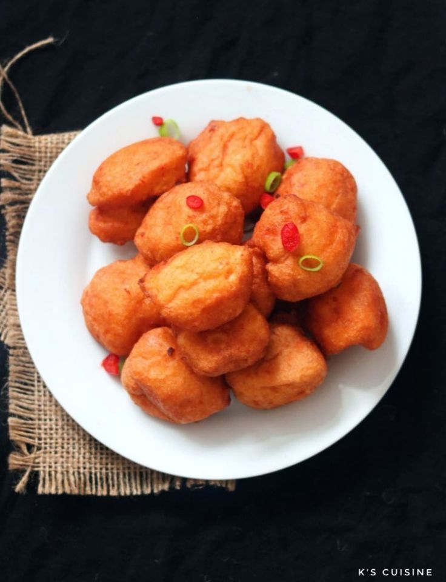

Akara

Akara is a delicious snack and a popular breakfast staple in Nigeria. It is also called Koose in Ghana or black-eyed pea fritters. This recipe is one of the easiest vegetarian or vegan-friendly Nigerian food. Let me show you how to make the best Akara that is fluffy, pillowy and delicious.
ingredients
- 4 Cups Beans
- Peppers
- 1 medium Onions
- 1 and half tbsp salt
- 1 sachet Ajino moto
- Oil
Steps
Tips For Making The Best AKARA (KOOSE)
- Blend the beans with very little water, too much water would result in flat or no akara (hahaha)
- Incorporate air into the bean batter before frying using a whisk or wooden spoon
- Regulate the hotness of the oil when frying. If the oil is too hot, it will burn the bean fritters and may result in false cooking which will make the inside undercooked